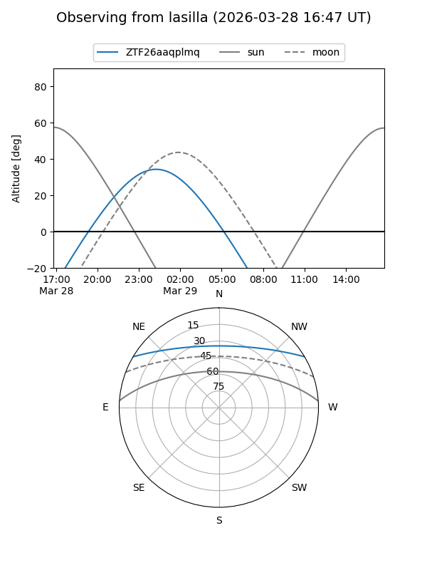
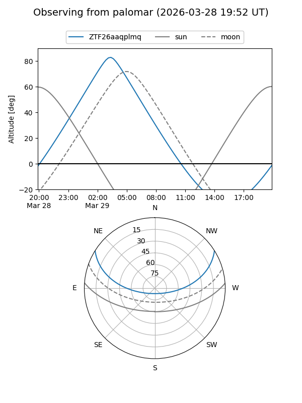

ZTF26aaqplmq
Target ZTF26aaqplmq at 2026-03-29 05:05
Aliases and brokers:
FINK: link
Lasair: link
ALeRCE: link
alt names
ZTF26aaqplmq (ztf,fink_ztf)
Coordinates:
equatorial (ra, dec) = 118.9911,+26.44413
equatorial (HMS+DMS) = 07:55:57.86,+26:26:38.88
galactic (l, b) = (194.7256,+25.11688)
Flags:
Photometry:
last ztfg=19.35
1 ztfg detections
Lightcurve
Visibility


Additional plots